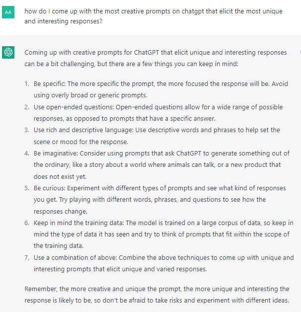
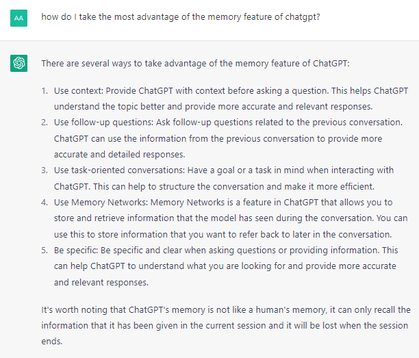
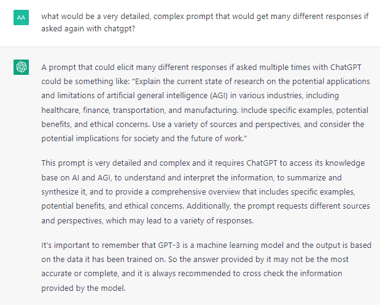

Aaron S. | Jan 30, 2023
Ordinary human language is basically the newest programming language, and thoughtful prompt articulation is an increasingly useful or necessary skill for countless applications. Interactive NLP is more of an imagination & semantic logic puzzle for abstract programming approaches. Simply having the right questions on hand can be the main priority, which is apparent when finding out how much more useful distilling data from language you can provide it can be than obtaining data by other means. There's an entertainment value, but efficient prompt architecture is about cohesive, parsimonious steps to arriving at a predetermined objective.
In most cases, vague questions result in more basic or generic results that could be obtained from a search engine.
The key to the most productive approach to harnessing the power of these models involves collaborative work: iterative fine-tuning on behalf of a person who may have an intimate understanding of associated subject matters, and the AI making full use of memory + prompt-elicited knowledge & perspectives. Each revision will mold the results, diverging from what anyone else would have asked. Optimal, exploitative answers may involve tapping into vast literature without years of studying, or compounding complex & sometimes unintuitive logical approaches.
While avoiding redundancy, providing as much context as possible will faciliatate the curation of content to match what was intended. There is a landscape of contexts that interact with each other, each with associated weights, dimensions, and layers of perspectives to combine with others to potentially arrive at exponentially unique results. Variable quantities & qualities multiply with each other as the discussion takes different avenues of parameters. With such powerful models as ChatGPT, respecting the prompt sensitivity can yield results that are the difference between it declining to answer a question at all, and it giving a very creative and apt response.
The quest to improve prompt design is made easier by asking ChatGPT, which it can provide plenty of insight on without hesitation. For many questions it can be modest, stating it's limitations and providing ample disclaimers, which helps prevent trolls from finding a way to make it get taken down for everyone else. But by skillfully & creatively rephrasing questions, many of these issues can be addressed. Ultimately, the best prompts can be increasingly lengthy and also assist with getting answers fewer people have already uncovered.



Another useful concept is providing it information that you know is verified, and asking it to answer questions based only on that content, and to let you know if it cannot answer it with the given information. Obtaining verified, rigorous results can be one of the shortcomings of language models, thus arise options such as using shortcuts like force-feeding the data you want, or researching conclusions manually.
Valuable prefixes & suffixes include:
(each is like distilling the takeaway from a 20-minute YouTube video)
•
Answer using only questions
•
Provide multiple answers from different perspectives
•
Include analogies
•
List arguments/criticisms for each side
•
Explain in as few words as possible
•
Suggest various improvements
•
Describe for a particular audience
•
Suggest prompts to obtain particular results
•
"Act as a..." resource
Sample template:
You are a [role] with a focus on [objective]. Using [resources], from the perspective of [situation], in given [context], and keeping in mind [parameters] answer [question]. The answer should be in at least/most [number] of words. Provide [number] copies of the answer from diverse [perspectives], labeling the description of each prior to the solution. You are explaining this to [audience].
Whether you're seeking the most impressive, elaborate, detailed, efficient, entertaining, or functional results will depend on the syntax & combination of parameters used in the prompt. There should be a consistent focus on cohesive elements of functionality. Sometimes, choosing the right prompt is as simple as asking what a good prompt would be for a particular result.